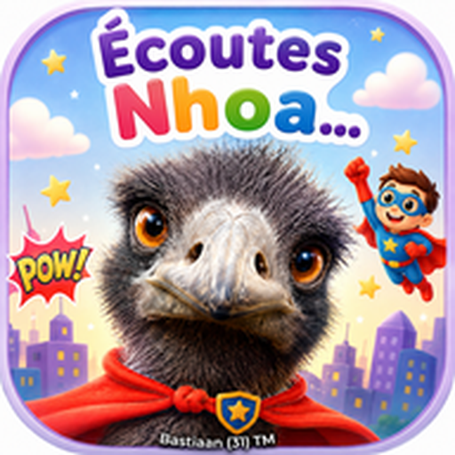

🦸 Histoires pour 5 ans
Des aventures audio de science-fiction et de super-héros adaptées aux plus jeunes.
🎧 Écouter les histoires — 5 ans
Deux accès simples vers des histoires audio de super-héros. Choisis ton univers et écoute l'histoire dans Safari.
Des aventures audio de science-fiction et de super-héros adaptées aux plus jeunes.
🎧 Écouter les histoires — 5 ansDes histoires audio de super-héros pour les enfants qui veulent un peu plus d'aventure.
🎧 Écouter les histoires — 7 ans